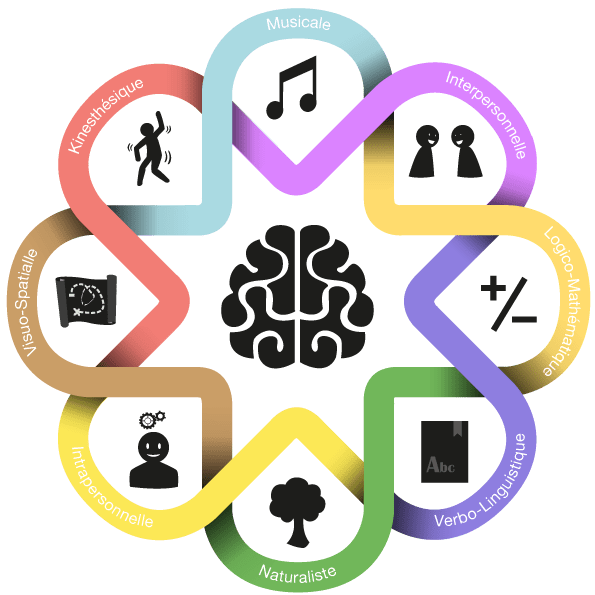

L'intelligence artificielle une question de memoire?
Qu'est ce que l'intelligence?
Selon l’étude de Keymeulen sur Gardner (Keymeulen , 2019) il existe plusieurs types d’intelligence (intelligences humaines). En effet il existe 8 types d’intelligences :
-

- L’intelligence linguistique
- L’intelligence logicomathématique
- L’intelligence intrapersonnelle
- L’intelligence interpersonnelle
- L’intelligence visuospatiale
- L’intelligence kinesthésique
- L’intelligence musicale
- L’intelligence naturaliste
Ces différents types d’intelligence permettent de réaliser les différents tâches du quotidien. Par exemple l'intelligence verbale consiste à utiliser le langage pour comprendre les autres et exprimer sa pensée. C'est l'intelligence du son. L'intelligence logico-mathématique correspond à la capacité de raisonner, d'analyser, d'observer et de résoudre des problèmes. Formuler des hypothèses, comprendre des phénomènes complexes, manipuler des nombres et effectuer des opérations mathématiques nécessitent beaucoup d'observation et d'analyse. Aussi, l'intelligence intrapersonnelle qui vous permet de vous comprendre, de comprendre de quoi vous êtes capable, de comprendre vos limites et vos forces, de reconnaître vos désirs et vos rêves et de comprendre vos réactions. Une autre intelligence qui se rapproche de cela est l'intelligence interpersonnelle, qui nous permet de discerner les différences de personnalités, de dispositions et de motivations comportementales entre les individus. Il permet l'empathie, la coopération et la tolérance. Il existe des moyens de discerner les intentions d'une personne sans les admettre ouvertement. Mais il existe aussi une intelligence visuo-spatiale qui permet aux individus de se forger mentalement des représentations spatiales du monde. Vous aurez l'occasion de créer des objets d'art et d'artisanat, d'assortir des vêtements, des meubles et des objets, et de penser en images. L'intelligence kinesthésique est la capacité de communiquer ou de s'exprimer à l'aide de son corps ou de parties de son corps dans des contextes quotidiens ou artistiques, la capacité d'effectuer des tâches nécessitant une motricité fine et un apprentissage par la manipulation d'objets. choses physiques, faire de l'exercice ou faire du sport. Définir l'intelligence musicale, la capacité de penser aux rythmes et aux mélodies, de reconnaître les modèles musicaux, de les mémoriser, de les interpréter et de les créer, et d'être sensible à la musicalité des mots et des phrases. L'intelligence naturaliste est la capacité d'un individu classer, distinguer, reconnaître et utiliser les connaissances sur l'environnement naturel, les animaux, les plantes ou les minéraux.
Les liens entre L’IA et l’intelligence humaines
Comme l’Homme est l’origine de l’intelligence artificielle, il existe différentes taches dans les quels on utilise L’IA pour rédiger des texte ce qui correspond pour l’homme a l’intelligence linguistique, mais aussi pour par exemple faire de la reconnaissance d’espèce végétale ce qui encore une fois correspond a une des intelligence, l’intelligence naturaliste. Il existe encore d’autres exemples de taches qu’ une IA peut effectuer pour cela je vous dirige vers la seconde page du site.
Qu’est ce que la mémoire ?
Tout comme nous avons besoin de mémoires pour faire fonctionner notre cerveau, l’IA est dépendante de la mémoire, en effet les IA sont très gourmande en mémoire. D’après l’étude publié sur Santé magazine (Santé Magazine, 2011) a propos de la mémoire, il existe aussi différents types de mémoire :
- mémoire de travail
- mémoire procédurale
- mémoire épisodique
- mémoire sémantique
- mémoire autobiographique
La mémoire de travail permet d'enregistrer et de gérer une ou plusieurs informations (jusqu'à sept) en même temps. Par exemple, lorsque vous entendez quelqu'un dire un numéro de téléphone, composez-le rapidement en pensant à quoi dire. Ces informations sont utilisées pendant environ 20 secondes, puis supprimées. elles ne sont pas sauvés. Au niveau du cerveau, la mémoire de travail est principalement localisée dans le lobe frontal. La mémoire procédurale est utilisée pour apprendre l'automatisation comme le vélo, la natation, la conduite d'une voiture, la lecture et l'arithmétique, et jouer du piano. Les gestes sont répétés inconsciemment. C'est la mémoire des savoir-faire, des savoir-faire et des capacités. La mémoire procédurale est principalement localisée dans le cervelet. La mémoire épisodique est utilisée pour créer des souvenirs. Enregistre les événements de la vie liés au contexte. Dans le cerveau, la mémoire épisodique se trouve principalement dans le lobe frontal, mais peut également se trouver dans le lobe occipital. La mémoire sémantique est utilisée pour stocker des connaissances, des faits et des concepts. Données historiques, langues étrangères, table de multiplication, etc. Il est principalement situé dans la région temporale du cerveau. La mémoire autobiographique vous aide à construire votre identité en enregistrant tout ce qui vous concerne. C'est épisodique et sémantique. Au niveau du cerveau, il est principalement localisé dans le lobe occipital.
Les liens entre L’IA et la mémoires humaines
Et comme l’homme l’IA a plusieurs façon d’utilisé les données qu’on lui fournit, le machine learning a besoin de mémoire importante comme la mémoire procédurale chez l’homme car c’est a force de refaire des tentatives que le programme ce perfectionne. Il existe des IA qui elle se serve de plein de données différentes pour ce créer une identité ce qui ressemble fortement a une mémoire autobiographique. Les IA de recherches ressemble plus au la mémoires sémantique car elles se servent de toutes les données a leur disposition pour nous guider au mieux dans nos recherches.
Pour conclure l’homme a créer un intelligence qui lui ressemble car elle répond au différentes intelligence que l’homme a besoin et forcément il a aussi reproduit la même manière d’utiliser les données que notre mémoire. L’IA n’est qu’un programme un algorithme qui prend des décisions en fonction des données ou des paramètres qu’on lui fournit.
Source
[1] Keymeulen, « Gardner et sa théorie », Intelligences Multiples. https://www.intelligences-multiples.org/intelligences-multiples2/les-8-types-dintelligences/.
[2] « Cinq types de mémoires : évolution, entraînement, fragilités ? | Santé Magazine », 7 mars 2011. https://www.santemagazine.fr/psycho-sexo/psycho/pas-une-seule-memoire-mais-plusieurs-178004.